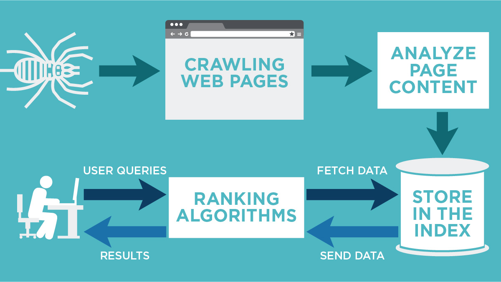

Introduction to Web Indexing
Web indexing is the process of collecting, parsing, and storing data to facilitate fast and accurate information retrieval on the web. It forms the backbone of search engines, enabling users to quickly find relevant content based on their search queries. Web indexing is not just about collecting data but also about structuring it in a way that makes it easily searchable and retrievable.
How Web Indexing Works
- Data Collection: Crawlers (also known as spiders or bots) visit web pages and collect content. This includes text, images, metadata, and more.
- Parsing: The collected content is analyzed, categorized, and broken down into smaller components such as keywords, phrases, and tags.
- Storage: Parsed data is stored in a database, creating an index that is optimized for quick retrieval. This index is continuously updated as new data is collected.
- Retrieval: When a user enters a search query, the search engine queries the index to find and rank the most relevant results. Advanced algorithms determine the ranking based on factors such as relevance, freshness, and authority.

Benefits of Web Indexing
- Speed: Indexing allows for rapid search results, often in milliseconds, providing users with immediate access to information.
- Accuracy: Provides relevant results based on user queries, improving the user experience and satisfaction.
- Scalability: Handles large volumes of data efficiently, making it possible to index the entire web continuously.
- Organization: Structures the vast amount of information on the web, making it easier to manage, retrieve, and analyze.
Challenges in Web Indexing
- Dynamic Content: Continuously changing web content is hard to index. Websites with frequently updated content require constant re-indexing to stay current.
- Scalability: The web is massive and ever-growing. Ensuring that the index is comprehensive and up-to-date requires significant computational resources and sophisticated algorithms.
- Duplicate Content: Identifying and managing duplicate content is complex but essential to ensure that search results are not cluttered with repetitive information.
- Data Quality: Ensuring the accuracy, relevance, and freshness of indexed data is crucial. Outdated or incorrect information can lead to poor search results and user dissatisfaction.
The Future of Web Indexing
The future of web indexing lies in advancements in AI and machine learning. These technologies will enable more intelligent and context-aware indexing, where search engines can understand not just the keywords but the intent behind them. We may also see the rise of decentralized indexing systems that allow users to contribute to the indexing process, improving the coverage and accuracy of search results.
As the internet continues to evolve, so will the methods and technologies used in web indexing. The integration of AI, real-time data processing, and user-generated content will play significant roles in shaping the future of how we search and retrieve information online.
Get Involved
Web indexing is a field that constantly evolves with technology. If you're interested in contributing to this field, consider getting involved in open-source projects, joining online communities, or pursuing a career in search engine development. Whether you're a developer, data scientist, or simply a tech enthusiast, there's always room for innovation and improvement in web indexing.